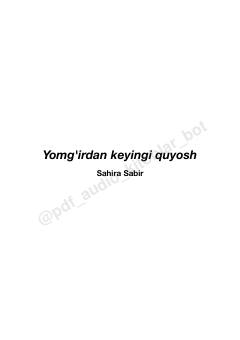

YKYo'qotishlar va qiyinchiliklar ortidan topilgan chinakam baxt va umid haqidagi ta'sirli hikoya.
Alina ismli qiz otasining vafotidan so'ng hayotga bo'lgan qiziqishini yo'qotadi va o'z ichiga berkilib qoladi. Taqdir uni Adrian ismli yigit bilan uchrashtirgach, qalb yaralari asta-sekin davolanib, hayotida yangi umidlar uyg'ona boshlaydi. Bu asar yo'qotishlar, o'tmish bilan yuzlashish va yomg'irdan keyin albatta quyosh chiqishi haqidagi ta'sirli hikoyadir.